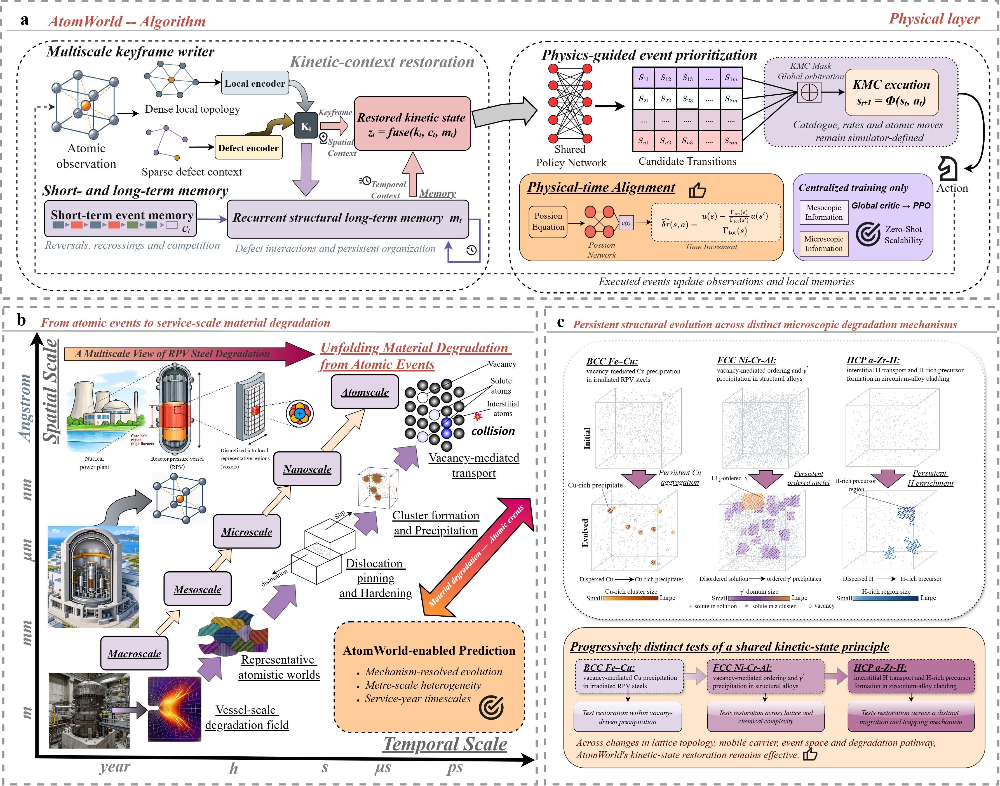

I am an undergraduate student at
Sichuan University,
pursuing dual bachelor's degrees in
Mathematics and Artificial Intelligence.
My research interests lie in AI for Science (AI4S),
Large Language Models (LLMs), and
scalable physical intelligence.
Currently, I am keeping abreast of recent advances in LLM reasoning,
generative AI, and other cutting-edge fields.
I look forward to exploring potential research collaborations and pursuing
PhD opportunities.
Please feel free to contact me.
Sep. 25, 2026
Our paper AtomWorld-Mem
was accepted to NeurIPS 2026!
It is my first research paper and was accepted on my first submission.
Special thanks to Kun,
who introduced me to research and has had a profound influence on my journey.
Sep. 20, 2026
I received the
National Scholarship
for the second consecutive year!
I am grateful for my hard work and for the support of my family, friends,
teachers, and everyone who has helped me grow.
Sep. 28, 2025
I received the
National Scholarship and Comprehensive First-Class Scholarship of Sichuan University
as the sole recipient in my major.
AtomWorld-Mem restores the hidden evolutionary state missing from
instantaneous crystal snapshots, enabling physically grounded and
transferable long-horizon atomistic evolution.

From atomic events to material degradation across metre and year scales
Kun Li†‡,
Tian Luo†,
Haozhi Han,
Ruge Zhang,
Yifeng Chen,
Xinfu He,
Yunquan Zhang,
Ting Cao,
Yunxin Liu
† Equal contribution. ‡ Corresponding author.
Preprint
Understanding material degradation over engineering timescales remains a fundamental challenge. We introduce AtomWorld, a physics-grounded atomistic world model that restores hidden kinetic context to bridge atomic events and material degradation across metre and year scales.
Education
Sichuan University
2024–2028 (Expected)
Undergraduate Student
Dual bachelor's degrees in Mathematics and Artificial Intelligence